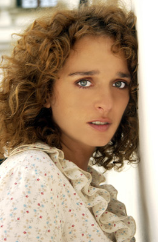

#8540 Jacky im Königreich der Frauen
Alternativ: Jacky in the Kingdom of Women (Englischer Titel)

 IMDB-Wertung: 6.0 / 10
IMDB-Wertung: 6.0 / 10  Metascore: 0
Metascore: 0 
In the Kingdom of Bubunne, women are in power while men wear veils and do domestic tasks. Jacky, a lovely young man who dreams of marrying the 'Colonelle' has to struggle like a Cinderella to realize his dreams.
Jahr: 2014
Dauer: 89 Minuten
FSK: 12
Land: Frankreich Studio: Pandastorm PicturesTonspuren:
Untertitel: Deutsch,
Auflösung: 1080p (1920x1040) Größe: 5365 MB
Genre: Komödie
Regisseur: Riad Sattouf
Drehbuch: Riad Sattouf
Soundtrack: Riad Sattouf
Darsteller:
- Vincent Lacoste als Jacky
- Charlotte Gainsbourg als La colonelle
- Didier Bourdon als Brunu
- Anémone als La générale
- Michel Hazanavicius als Julin
 Noémie Lvovsky als Tata
Noémie Lvovsky als Tata- Laure Marsac als Zani, la mère
- William Lebghil als Vergio
- Anthony Sonigo als Juto
-  Valeria Golino als Bradi Vune
 Emmanuelle Devos als La présentatrice télé
Emmanuelle Devos als La présentatrice télé- Nicolas Maury als Speaker 2
- Valérie Bonneton als La chérife
- India Hair als Corune
- Béatrice de Staël als L'épicière
- Frédéric Neidhardt als Le deuxième marion de Tata
- Anamaria Vartolomei als Zonia
- Riad Sattouf als Mit Kronk
- Ida Février als Fillette Museau 1
- Olga Milshtein als Fillette Museau 2
- Nia Bezarashvili als Fillette Museau 3
- Emile Bravo als Speaker 1
- Oury Milshtein als Présentateur bus
- Solveig Maupu als Militaire Museau 1
- Julie Moulier als Militaire Museau 2
- Valérie Trajanowski als Cousine Julin 1
- Marie Berto als Cousine Julin 2
- Marine Kulumbegashvili als Etranger 1
- Mamuka Kudaya als Etranger 2
- David Davitaia als Etranger 3
- Avi Liani als Etranger 4
- Giorgi Ramishvili als Etranger 5
- Blutch als Le fiancé
- Gaspard Darley als Ami Museau
- Nino Loseliani als La mère scandalisée
- Irina Wanka als La colonelle (uncredited)
Datei: X:\2014(G-M)\Jacky im Königreich der Frauen (2014, FSK12, 1920x1040).mkv seit 22.03.2018
Festplatte: HD 2013(I-Z)-2014(A-Z)
 Es gibt insgesamt 136 Filme in der Gruppe '2014(G-M)'
Es gibt insgesamt 136 Filme in der Gruppe '2014(G-M)'